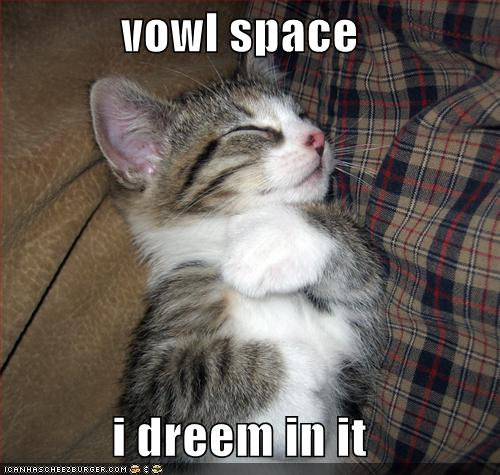
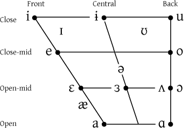
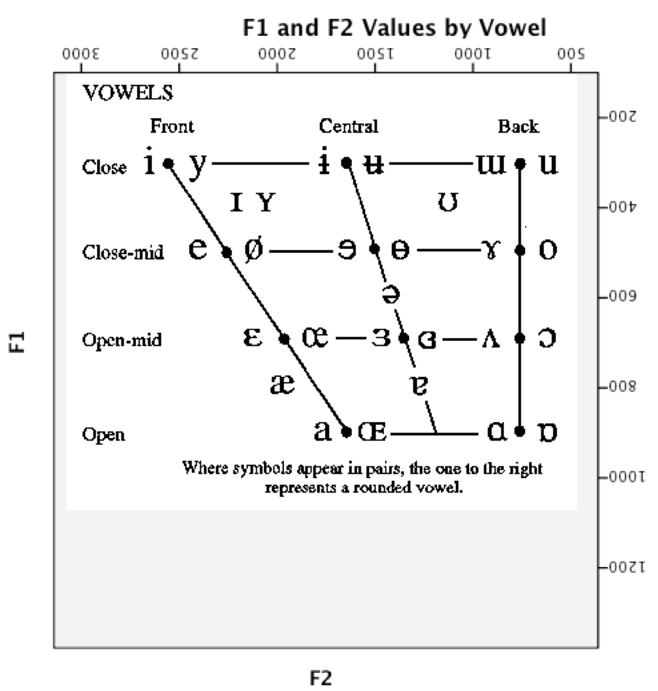
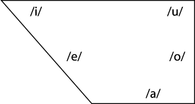
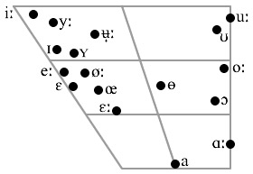
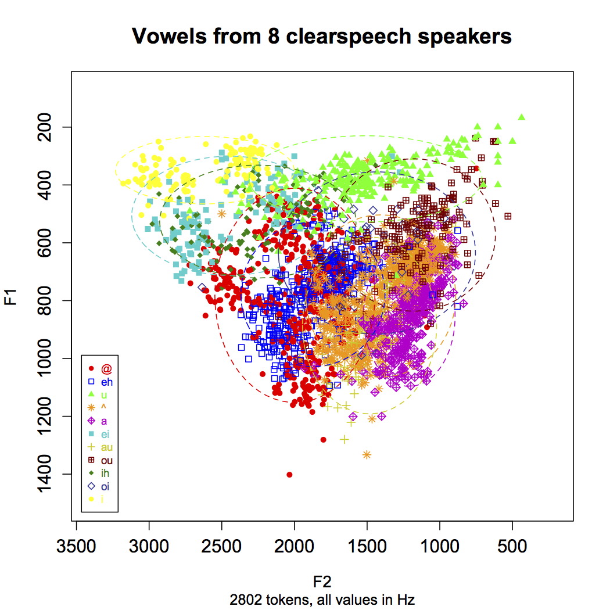
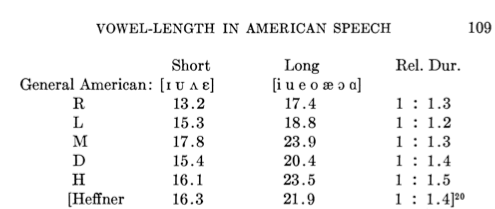
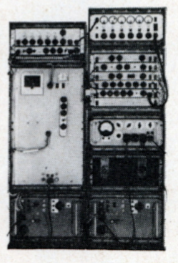
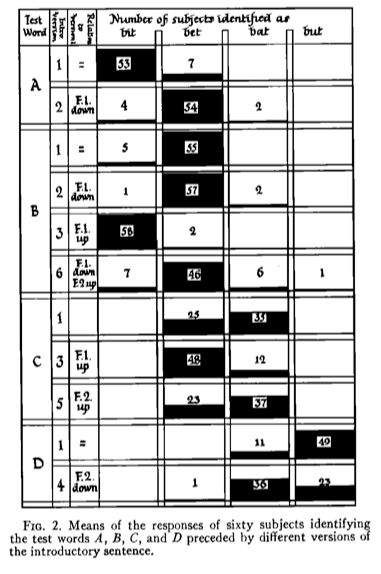

 --- # Vowel Perception is magic <img class="big" src="img/hogwarts.jpg"> ### LING 3100 - Will Styler --- ### So, vowel perception is kind of my thing * My project for this class * My project for the grad version * My MA Thesis * My Prelim * My Dissertation --- <img class="big" src="humorimg/ohgodwhy.jpeg"> --- ### Why study vowel perception? * Because all languages use vowels, and they work similarly everywhere * Because vowel perception is interestingly complicated * Because it shows us interesting things about sociolinguistic distinctions and the mind * Because it’s a great test case for how the brain deals with variation * ***Because vowels are awesome*** --- ### (Yeah, I said it. Take that, Consonants) --- What kind of vowels are we talking about? --- <img src="phonmedia/aeiou.png"> ---  --- ### Review: What is a vowel? * A vowel is voicing passing through (and resonating in) an unobstructed vocal tract! * If we change the position of the tongue, we change the resonances --- <img class="big" src="phonmedia/voweltongue.png"> --- ### Review: What is a vowel? A vowel is voicing passing through (and resonating in) an unobstructed vocal tract! If we change the position of the tongue, we change the resonances * Different resonances *filter* the sound differently and determine the vowel quality * **Different tongue shapes create different resonances, and different vowels!** --- <img class="big" src="phonmedia/voweltongue2.png"> --- ### What do vowels sound like? * We talk about vowel quality in terms of "formants" * These are bands of the spectrum where the energy is strongest * The frequencies of these formants are our primary cues --- <img class="big" src="phonmedia/iformants.png"> --- <img class="big" src="phonmedia/iformantslabeled.png"> --- ### Vowel formants * F1 and F2 are generally considered to be the most important * F3 is good for rounding and rhoticity --- ### Formants alone can be enough for some perception! --- # F1 <audio data-autoplay src="phonmedia/thanksforattendingf1.mp3"></audio> --- # F2 <audio data-autoplay src="phonmedia/thanksforattendingf2.mp3"></audio> --- # F3 <audio data-autoplay src="phonmedia/thanksforattendingf3.mp3"></audio> --- ## All together now! --- ### What's being said? <audio data-autoplay src="phonmedia/thanksforattendingsine.mp3"></audio> --- ### Here's the original <audio data-autoplay src="phonmedia/thanksforattendingorig.mp3"></audio> --- ### Listen again! <audio data-autoplay src="phonmedia/thanksforattendingsine.mp3"></audio> --- <img class="big" src="humorimg/dudewaitwhat.jpg"> --- ### So, vowels are basically formant patterns --- <img class="big" src="phonmedia/vowelformants.gif"> <small>Different American English vowels, as spoken by a male speaker</small> --- ### ... and vowel formants map to articulation! --- <img class="big" src="phonmedia/formantsarticulation.png"> --- ### The IPA chart is acoustic! ---  --- <img class="big" src="phonmedia/ipaformantsgraph.png"> --- <img class="big" src="humorimg/conspiracykeanu.jpg"> --- So... * We listen for formants * We figure out their frequencies * Then we know which vowel we’re hearing. * ### What’s the problem? --- # Language is crazy * (In Linguistics, that's *always* the problem) --- ### Why is vowel perception hard? * Vowel differences are gradient * Dialect and language variation is everywhere * Speakers vary from person to person. *A lot!* * They also vary from moment-to-moment --- ## Perceptual Gradience --- ### Perceptual Gradience * You can make an infinite number of tongue shapes causing an infinite number of vowels. * There's no "alveolar ridge" to give a steady target * Phonemes have perceptual boundaries * Vowels with formant values in between phonemes are rough * Not all listeners agree on where the boundaries are between, say, /e/ and /ɛ/ --- ### Date vs. Debt --- # Date <audio data-autoplay src="phonmedia/date1.mp3"></audio> --- # Debt <audio data-autoplay src="phonmedia/date12.mp3"></audio> --- ## ? <audio data-autoplay src="phonmedia/date4.mp3"></audio> --- ## ?? <audio data-autoplay src="phonmedia/date8.mp3"></audio> --- ## ??? <audio data-autoplay src="phonmedia/date6.mp3"></audio> --- ### Let's do an experiment! --- ## ???? <audio data-autoplay src="phonmedia/date_debt_11_steps.mp3"></audio> --- The first and last sounds have formants like the typical English /eɪ/ and /ɛ/vowels <img src="phonmedia/datedebtspectrogram.png"> <audio data-autoplay src="phonmedia/date_debt_11_steps.mp3"></audio> --- ... but in the middle, we're not really sure what's going on <img src="phonmedia/datedebtspectrogram.png"> --- ## Language plays a major role in categorization! --- ### Language as a perceptual factor * The vowel inventory in a language has a strong effect on the perception of vowels * If you have lots of vowels, each one gets less acoustic elbow room --- ### Spanish  --- ### English --- ### Swedish  --- ## Speaker Variation! --- ### Speaker Vowel Space Variation * Different speakers produce different resonances, even for the “same” vowels * Vocal tracts can be shorter, longer, wider... --- <img class="big" src="ling_memes/vocaltract.jpg"> --- ### Speaker Vowel Space Variation Different speakers produce different resonances, even for the “same” vowels * Speaker can have colds or allergies, can have more nasal voices... * Sociolinguistic factors galore * Every person has a different set of basic vowel formant positions * This is called the speaker’s “vowel space” --- <img class="big" src="phonmedia/ipaformantsgraph.png"> --- <img class="big" src="phonmedia/clearspeech_speakeraverages.png"> --- ### Moment-to-moment Vowel Variation * Even the same speaker will have variation from moment to moment * Sometimes we misarticulate, accidentally making the wrong vowel quality * Or we talk with food in our mouths, producing different resonances * Or sometimes, we’re just plain lazy * This leads to constant and massive changes in vowel production --- <img class="big" src="phonmedia/clearspeech_speakeraverages.png"> --- <img class="big" src="phonmedia/clearspeech_alltokens.png"> ---  --- <img class="big" src="humorimg/trainwreck.png"> --- ### Every person you've ever talked with has had different vowel formant patterns * ... and yet, we understand each other, somehow --- ## See, I told you: Magic <img class="big" src="img/magic.jpg"> --- ### How do we accomplish this magic? --- ### Some people try to put the issue aside --- <img class="big" src="phonmedia/vowelchart_variation.jpg"> --- <img class="big" src="phonmedia/vowelchart_variation2.jpg"> --- ### ... but how do we manage perceptually? --- ### Dealing with vowel variability! * We stack the deck in our favor using the phonology of the language * We use non-formant-related cues such as vowel length * We attend to context * We adjust to individual speakers (or vocal tracts) through Speaker Normalization * Then, if all else fails, we pretend that we understood, and hope for the best --- ## Dirty Phonological Tricks --- ### Vowel Inventories are designed for perceptibility * Vowels are spread through the mouth --- ### Spanish --- ### English --- ### Swedish --- ### Vowel Inventories are designed for perceptibility Vowels are spread through the mouth * Languages try to maintain perceptual contrast (to keep things as perceptually unambiguous as possible) * /i, e, a, o, u/ more common than /i, y, e, œ, ɛ/ * Contrasts that are tough to hear go away! * Rounding is used to distinguish vowels which might otherwise be confusable * /i, u/ not /y, u/ --- ### Vowel Length helps too! * English tense vowels (/i, e, o, æ, ɔ, ɑ/) are longer than lax vowels (/ɪ, ʊ, ʌ, ɛ/)  <small>Data from Rositske 1939</small> --- ## Context helps! --- ### The Role of Context * Context helps us to understand words even if the phonemes are acoustically ambiguous * Easier to understand “Hello” in its normal conversational context * If you’re not expecting a word, you’ll have to fight harder to understand it. * “Hi, John! Partial Nephrectomy!” * “Ohh, Invasive Adenocarcinoma arising in tubulovillious adenoma” * Nobody runs into rooms and shouts "bat!" --- ## Speaker Normalization --- ### Speaker Normalization * Every speaker you meet has acoustically different vowels * We are able to adjust very quickly, and have little trouble with later understanding * The process by which we adjust is called “Speaker Normalization” * This process isn’t entirely understood * That's a *massive* understatement --- ### History of Normalization * Differences in absolute vowel qualities were noted very early on * Two Competing Theories in the 40’s and 50’s: * Peterson: We identify vowels based on their absolute formant frequencies * Joos: We identify vowels based on their relative formant structures * If Joos is right, then prior context aids in normalization * Ladefoged and Broadbent set out to test that idea in “Information conveyed by vowels” in 1957 --- ### *Information Conveyed by Vowels* * Ladefoged and Broadbent 1957 * Six versions of an introductory sentence were synthesized, each with different formant structures * Four test words were synthesized as well * Listeners heard different combinations of test words and sentences * *If vowel perception is about absolute frequencies, the prior sentence shouldn't matter!* --- <img class="big" src="phonmedia/ladefogedbroadbent/ladefogedbroadbent_chart1.png"> --- <img class="big" src="phonmedia/ladefogedbroadbent/ladefogedbroadbent_chart2.png"> --- # 1957! --- They had to paint what they wanted on glass <img class="big" src="phonmedia/ladefogedbroadbent/ladefogedbroadbent_glassslide.png"> --- Then feed it into an analog sound synthesizer  --- ### The results weren't too pretty --- ### Stimulus #4 <audio data-autoplay src="phonmedia/ladefogedbroadbent/ladefogedbroadbent_please4.mp3"></audio> --- ### Stimulus #5 <audio data-autoplay src="phonmedia/ladefogedbroadbent/ladefogedbroadbent_please5.mp3"></audio> --- ### Stimulus #6 <audio data-autoplay src="phonmedia/ladefogedbroadbent/ladefogedbroadbent_please6.mp3"></audio> --- ... but it worked! --- ### Different contexts led to different perception!  --- ### Ladefoged and Broadbent: Conclusions > “The linguistic information conveyed by a vowel is largely dependent on the relations between the frequencies of its formants and the formants of other vowels occurring in the same auditory context” * This set the stage for future work in normalization! --- ## So, uh, how's that work going? --- We've got two main theories! --- ### Speaker-intrinsic vowel space normalization * Normalization is a process that “happens” * You meet somebody, you create a model of their vowel space, and you move on * These models of speaker vowels are maintained in memory * One model per person, and a new model each time! --- ### Speaker-extrinsic vowel space normalization * We store information from *every vowel we hear*! * Normalization is then just bulk comparison and probability * Vowel identities are probabilistically determined * One might start with an “English” vowels model * Then, you build a per-speaker exemplar cloud * Both your per-speaker and overall models change --- <img class="big" src="phonmedia/clearspeech_alltokens.png"> --- ### We don't know which is more accurate! --- ### What do we know about normalization? * It’s not just about the point vowels (/i, a, u/) as Joos suggested (Verbrugge et. al. 1976) * Context influences Normalization (as in Ladefoged and Broadbent) * Knowledge about the speaker (gender, sociolinguistic data) influences normalization (Strand 2000) * Recent context might be more important than older context (Ciocca, Wong, et al. 2006) * The normalization process shows up in reaction time during vowel identification tasks (Haggard and Summerfield 1977) --- ### What else do we know about normalization? * Breath sounds don’t provide good information for normalization, and F0 isn’t a critical factor (Walen & Sheffert 1997) * More context seems helpful, but only to a certain point (Kakehi 1992) * We have to normalize to consonants too *Some evidence that vowel formants are used to normalize /s/ vs. /ʃ/ * Infants Can normalize to vowels (Kuhl 1979) * So can dogs (Baru 1975) and Zebra Finches (Ohms et al 2009) --- These finches are a *major* problem. --- <section data-background="phonmedia/zebrafinch_intrinsic.jpg"></section> --- <section data-background="phonmedia/zebrafinch_extrinsic.jpg"></section> --- <section data-background="phonmedia/zebrafinch_takethat.jpg"></section> --- ### Wrapping up * Formants (F1 & F2) are (still) the primary means of identifying vowels * Vowel perception is complicated by the enormous variation between speakers and tokens * Our vowel judgements are affected by the language we speak and by context * The phonology helps make things perceptually easier * Vowel charts, although well-intentioned, are dirty, dirty abstractions * Vowel perception is basically magic --- <section data-background="img/hogwarts.jpg"></section> --- <huge>Thank you!</huge> http://savethevowels.org/talks/vowelperception.html --- # References Baru, A. V. (1975). Discrimination of synthesized vowels /a/ and /i/ with varying parameters (f0, intensity, duration, # of formants) in dog. In G. Fant, & M. A. A. Tatham (Eds.), Auditory Analysis and perception of speech. New York: Academic Press. Ciocca, V., Wong, N. K. Y., Leung, W. H. Y., & Chu, P. C. Y. (2006). Extrinsic context affects perceptual normalization of lexical tone. The Journal of the Acoustical Society of America, Vol. 119, No. 3, 1712-1726. Joos, M. (1948). Acoustic Phonetics - Supplement to Language. Baltimore: Linguistic Society of America. Ladefoged, P., & Broadbent, D. E. (1957). Information Conveyed by Vowels. The Journal of the Acoustical Society of America, Volume 29, Number 1, 98-104. Ohms et al. Zebra finches exhibit speaker-independent phonetic perception of human speech. Proceedings of the The Royal Society of Biological Sciences (2009) Rositzke, H. A. (1939). Vowel-Length in General American Speech. Language, Vol. 15, No. 2, 99-109. Verbrugge, R. R., Strange, W., Shankweiler, D. P., & Edman, T. R. (1976). What information enables a listener to map a talker's vowel space? Journal of the Acoustical Society of America, Vol. 60, No. 1, 198-212. Whalen, D. H., & Sheffert, S. M. (1997). Normalization of Vowels by Breath Sounds. In K. Johnson, & J. W. Mullenix (Eds.), Talker Variability in Speech Processing (pp. 133-143). San Diego, CA: Academic Press Ltd. ---